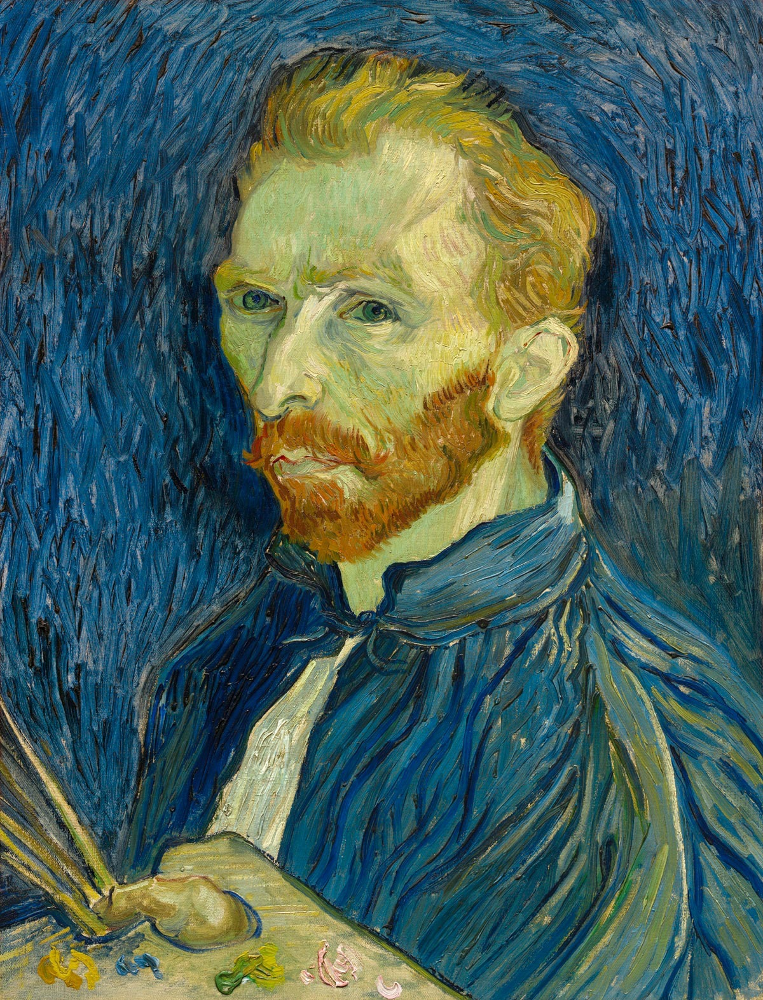

- Vincent van Gogh (1853-1890), perhaps the most famous artist in the world, is perceived by many as the 'mad' artist, the man who painted in a frenzy or simply the tormented soul who cuts off his ear.
- His artistic genius is often overshadowed by those who see his paintings as mere visual manifestations of his troubled mind. Whilst in part this may be true, in reality his innovative and unique artistic style was of enormous importance to a host of artists who followed in his wake.
- Even when openly influenced by his predecessors or contemporaries his art remained identifiably his own, developing a distinctive style that failed to be accepted by the art-buying public in his own time.
- The career of Vincent van Gogh as a painter was short, but his paintings revolutionized artistic practice and styles. The intensity of his vision, his wonderful sense of color, and the extraordinary boldness of his technique created masterpieces that exercise a profound influence on the art of the twentieth century.

Famous Quotes
"What is done in love is done well.”
"I don't know anything with certainty, but seeing the stars makes me dream. ”
"I put my heart and my soul into my work, and have lost my mind in the process...”
"I would rather die of passion than of boredom."
"I often think that the night is more alive and more richly colored than the day."